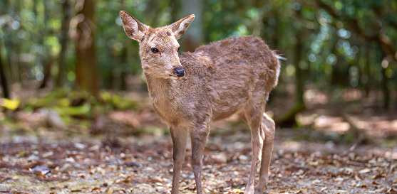
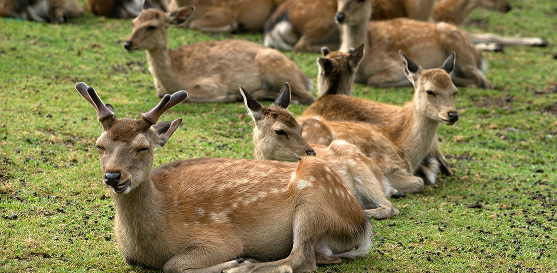

Causes
The Environment
Environmental factors can directly and indirectly make life difficult for deer, often by altering their habitat, food availability, and survival conditions. As the deer population increases so does their feeding. The more deer eat, the more they strip away shrubs, young trees, and wildflowers. This changes forest composition and reduces biodiversity. Loss of plant biodiversity also reduces shelter and food for other wildlife, creating a cascade of ecological problems.
Human Population
The human population growth often changes landscapes in ways that can make deer populations ecologically unhealthy and create conflicts with people. Human-driven changes can push deer numbers beyond the ecological carrying capacity of their habitat. Human land use and hunting has reduced natural predators. Without the natural controls, deer numbers can rise well above what the ecosystem can sustain, leading to overgrazing, loss of biodiversity, and being chased away from their habitats.
Sick Deer
Deer are increasingly showing up in neighborhoods, parks, and other urban spaces. It’s not random, it’s a response to habitat loss and food availability. Underlying factors are deer disease and human disturbance. Outbreaks of Chronic Wasting Disease or other illnesses can push deer degraded areas into urban zones, where they may find better food and shelter. Urban areas offer more stable nutrition which can help deer recover.

